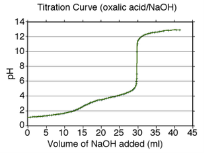

Leche
La leche es un alimento esencial, rico en nutrientes.
Con esta página web aprenderás cómo se analiza y por qué es tan importante en nuestra alimentación.

La acidez de la leche es dada por su componentes ácidos como son fosfatos, citratos, carbonatos, hidroxilos y proteínas; y los componentes básicos que incluyen sodio, potasio, calcio, magnesio e hidrógeno. En la leche de vaca, la acidez titulable generalmente varía entre 14°D y 18°D en condiciones normales. Por lo tanto, para detectar posibles alteraciones, una acidez en vaca inferior a 14ºD puede indicar procedencia de animales enfermos (mastitis, es decir, infección en la ubre), leches aguadas o la adición de alguna sustancia alcalinizante (hablará santi). En cambio, la acidez por encima de 18ºD, nos indican leches procedentes de ordeño poco higiénico o que han pasado más de 10 horas sin refrigeración y por consiguiente se ha empezado a producir ácido láctico por degradación de la lactosa.
La acidez de la leche puede ser clasificada como original y desarrollada. La original resulta de la presencia de sus constituyentes, y la desarrollada deriva del ácido láctico, producido a partir del crecimiento bacteriano.
La acidez de la leche puede medirse de dos formas: acidez actual y acidez titulable. La acidez actual se determina mediante un potenciómetro y se expresa en valores de pH. Sin embargo, debido al sistema tampón natural de la leche, su pH no cambia fácilmente incluso cuando hay variaciones en la cantidad de ácidos presentes. Esto se debe a la presencia de proteínas y sales que estabilizan el pH, lo que hace que esta medición no sea un indicador preciso de la acidez real de la leche.
Por esta razón, se prefiere la acidez titulable, que se determina a través de una titulación con una base, como el hidróxido de sodio (NaOH). En este proceso, la base reacciona con los ácidos presentes en la leche hasta alcanzar la neutralización, lo que permite cuantificar con mayor precisión la cantidad de ácido. Debido a su mayor sensibilidad y precisión, la acidez titulable es el método más utilizado para evaluar la acidez de la leche, ya que permite conocer la cantidad total de ácidos presentes sin la interferencia del sistema tampón que afecta la medición del pH.
